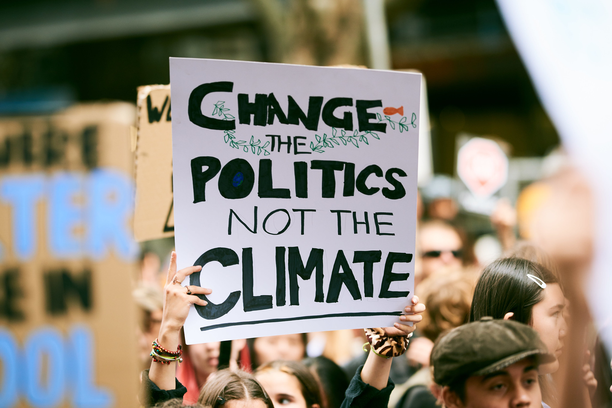

Common Misconceptions
Sort the fact from fiction as we tackle some of the most common myths about climate change.
Learn moreEnvironmental policy has long been a major player in political decisions, but as other issues such as conflict, cost of living and immigration take centre stage has climate change just become an empty promise on a manifesto?

In 2019 the UK became the first major economy to create a legally binding target to reduce carbon emissions to net zero by 2050. At the time the legislation passed with the support of all major parties. However, years on and the consensus in Westminster is a lot more divided.
The current Labour government has added an extra deadline of reaching clean power by 2030. While Greens and Liberal Democrats push to reach net zero faster, the Conservatives are backtracking on the policy. For the first time a major party, Reform UK, are actively questioning the need for the policy all together.
Sort the fact from fiction as we tackle some of the most common myths about climate change.
Learn moreWhat are the consequences of climate change and how is it affecting us?
Learn moreInvestigate how politics is shaping our response to climate change
Learn more